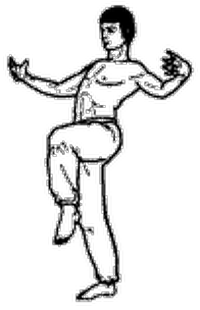

Журавль расправляет крылья

Исходное положение: Cтоим, ноги вместе, руки свободно опущены вниз.
Делая вдох животом, подаем таз вперед, при этом приподнимаем правую ногу, сгибая ее в колене, бедро параллельно полу, верхняя часть туловища отклоняется назад. Одновременно руки поднимаются вперед и в стороны на уровне плеч, кисти расслаблены, пальцы слегка разведены, локти чуть согнуты. По мере движения рук ладони разворачиваются внутрь, пальцы смотрят друг на друга, кисти максимально согнуты в лучезапястных суставах. Вдох ограничивается средней частью легких, не приводя к заполнению воздухом их верхних отделов. Выдыхая, медленно возвращаемся в исходное положение.
На вдохе представляем, что мы поднимаем бедром и руками шар, постепенно увеличивающийся в размерах и перекатывающийся с живота на грудь. На выдохе медленно опускаем уменьшающийся в размерах шар. Упражнение повторяется со сменой ног.
Конец. Вы восхитительны!